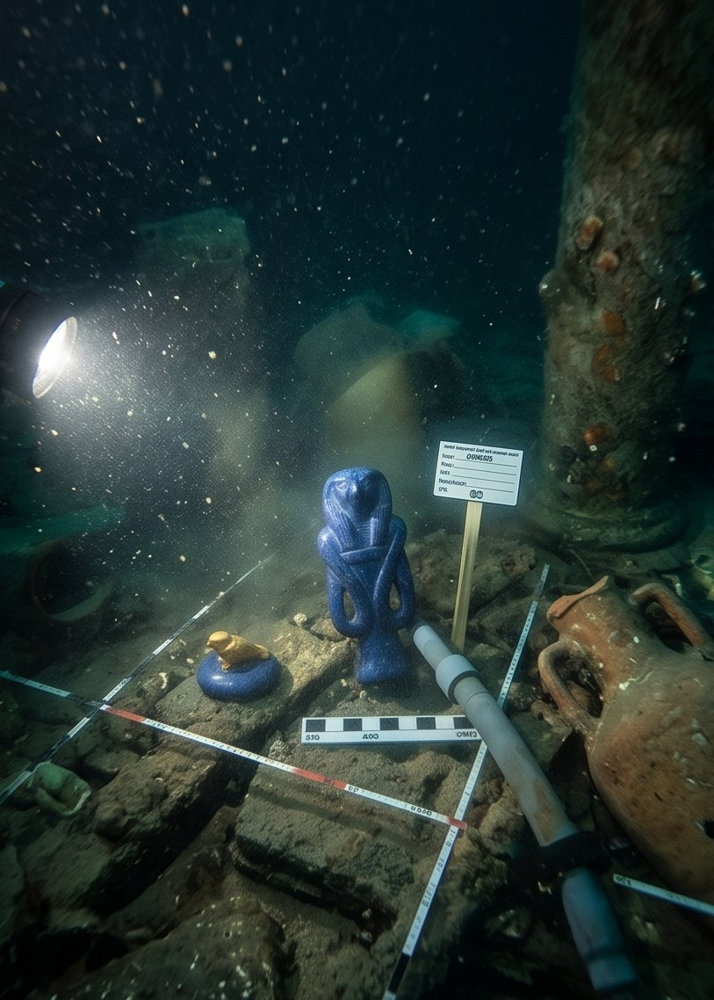

Dün sabah erken saatlerde, İskenderiye Körfezi'nde Antik Ptolemaios Sarayı kalıntılarında çalışan Fransız-Mısır ortak arkeoloji heyetinin dalgıçları, uzun süredir aradıkları "kraliyet çocuk odası" bölümüne ulaştı.
Sarayın M.S. 4. yüzyıl depremleriyle çöken kanadında, moloz taşların arasına sıkışmış küçük bir sandık tespit edildi. Sandıktan çıkan nesne kazı ekibini duygulandırdı.
Nesne; lapis lazuli taşından oyulmuş, "İsis'in Düğümü" (Tyet) biçiminde küçük bir merhem kabı. Kapağında altından işlenmiş, kanatlarını kavuşturmuş uyuyan bir şahin yavrusu bulunuyor. Ağzı ise özgün reçine mührüyle kapalı; kap iki bin yıldır bir kez olsun açılmamış.
Kazı başkanı Dr. Arnault, buluntunun "siyasi ya da askeri hiçbir anlam taşımadığını" belirterek kabın tamamen kişisel bir amaçla yapıldığını söyledi. "Kabın ağzına kazınmış hiyerogliflerde zarif bir ithaf var: 'Annesinden, yeryüzüne inen yeni tanrıçaya.'"

Mühür kırılmadı. Ancak kapak çevresindeki kılcal bir çatlaktan sızan kokuyu tespit eden heyet kimyacısı Dr. Isabelle Cros, anı şöyle aktardı: "Süt, bal, mavi nilüfer ve mür yağı. Antik Mısır'da yeni doğan asil bebekleri kötü ruhlardan korumak için annelerinin kendi elleriyle hazırladığı kutsal bir karışım. Karışım binlerce yıl öncesine ait. Ama koku tazeydi."
"Kabı yüzeye çıkardığımızda tüm ekip durdu. Kimse konuşmadı, kimse mührü açmaya cesaret edemedi. Sadece o kokuyu aldık — ve hepimiz ağladık."
— Dr. F. Arnault, Kazı BaşkanıEserin Metropolitan Museum of Art'ın (New York) kalıcı koleksiyonuna katılacağı açıklandı. Müze yönetimi sergi tarihini 2003 ilkbaharı olarak belirledi.
Dünkü kazıda ayrıca 14 lapis lazuli nesne, 6 alabaster kap ve çok sayıda bronz figür de yüzeye çıkarıldı. Ancak hiçbiri bu merhem kabı kadar gündem yaratmadı.
Oxford Üniversitesi Mısır Dilleri Bölümü'nden Doç. Dr. Claire Alderton, kabın üzerindeki ithafın Ptolemaios dönemine özgü bir hitap biçimi taşıdığını, ancak resmi saray söyleminden çok daha kişisel bir üslupla kaleme alındığını belirtti.
"'Yeryüzüne inen yeni tanrıça' ifadesi daha önce yalnızca tören duvarı yazıtlarında geçiyordu. Burada ise bir annenin el yazısıyla, küçük bir kabın ağzına. Bu benzersiz," dedi Alderton.
Enstitü ekibi nesneyi dün öğle saatlerinde konservasyon laboratuvarına taşıdı. Uzmanlar, mühre dokunulmayacağını; analizin yalnızca kabın dış yüzeyinden ve kapak çatlağından alınan mikro örnekler üzerinden yürütüleceğini açıkladı.
Analizin tamamlanması altı ila sekiz ay alacak. Sonuçlar, kabın kesin tarihini ve içindeki karışımın kimyasal bileşimini ortaya koyacak.
Kazı alanında Mısır Yüksek Antikiteler Konseyi'nden bir yetkili de bulunuyordu. Yetkili, eserin Mısır'da kalması için yasal süreç başlatılacağını belirtti.
"Bu eser Mısır tarihine aittir. Nerede sergileneceğine dair görüşmeler sürmektedir," dedi yetkili.